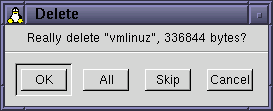

|
|
| LICENSE | GUIDE | INTRO | USAGE | CONFIG | HISTORY | CONTRIBUTING | ACKS |
Commands are important. In fact, I would almost go as far as to say that much of the rest of gentoo is there just so you can get to a point where executing the right commands, at the right time, and on the right files, becomes easy...
There are two different flavors of command: the built-in (sometimes called native) command, and the user-defined (external) commands. The difference is simple: built-in commands are written in C and compiled into the gentoo proper, while user-defined commands are defined by you, the user, at run time. It has been a goal to provide the most frequently used file operations as built-ins, in order to reduce the dependancies between gentoo and its host operating system.
All built-in commands have names where the initial letter of each word is capitalized. There are never any spaces or any other non-alphanumerical characters in command names. In this document, built-in commands are generally rendered in boldface to make them stand out.
Many of the built-in commands share the same dialog framework. This improves interface consistency, and cuts down on internal wheel reinvention. Such a dialog might look like this:

The area above the horizontal divider line in the window is known as the body of the dialog; it generally provides command-specific GUI controls. In this case, the "control" is just a text label asking you to confirm the Delete operation. The buttons have the following meanings:
For some commands, some of the buttons would be pointless; such as an "All" button for the Rename command. In those cases, the unwanted button is simply hidden from the dialog as to not confuse the user.
All built-in commands make sure they have the input they require before doing anything. For many commands, the input is just the set of selected items in the current pane. Some commands are sensitive to mouse doubleclicks; if they are envoked as the result of a doubleclick, they will detect this and act accordingly. Other commands ignore both selections and doubleclicks, and pop up a dialog where you specify the input the command needs.
Here is a reference table of all currently available built-ins. For each command a brief and a detailed explanation of the command's actions are provided. In this table, the commands have been divided into various groups (directory, activation, file ops and so on). This division is not visible when you use the commands; they are all accessed just by the plain names listed here.
| Name | Brief | Detailed | |
|---|---|---|---|
| Directory - Various dirpane operations | |||
| DirEnter | Enter a directory. | This command will make the current pane enter (CD into) a new directory. The directory chosen is either the one that was just doubleclicked upon by the user, or else the first selected directory found. This command is typically only used as the action property binding in the directory style(s). Of course, you can bind it to a button (or whatever) just as any command, but doing so is seldom convenient. | |
| DirOther | Copy contents of other directory to current. | This command copies the path shown in the other pane to the current, and then does a rescan. The net effect is that both panes show the same thing. | |
| DirParent | Go to the parent directory. | This changes the path of the current directory to its parent path. If you are already at the root of the filesystem (the path is "/"), nothing happens. | |
| DirRescan | Reread the current directory. | Use this command to ensure that the display is up-to-date and in synch with what is actually in the filesystem. It flushes the current pane and then rebuilds it by reading in the directory from disk. It does not affect the set of selected rows, however. | |
| DirSwap | Swap contents of the two panes. | This command will simply exchange the contents of the two panes. It is done without any rereading of the disk directories, and therefore is quite fast. | |
| Activation - Change current dirpane | |||
| ActivateLeft | Make the left pane the current. | Not much to add. | |
| ActivateOther | Make the other pane the current. | Which pane is activated by this pane depends on which one is the current when the command is envoked. If the left is current, the right is made the new current, and vice versa. | |
| ActivateRight | Make the left pane the current. | Not much to add. | |
| Basic - Basic file operations | |||
| Copy | Copy selected files and directories to destination. | This command does a straight copy of the selected files (and directories), placing byte-for-byte copies of the files in the destination directory. The copy is done recursively, so any directories in the selection will be copied in their entierity. | |
| Move | Move selected files and directories to destination. | This command moves all selected files and directories, recursively, from the current directory into the destination dir. It is equivalent to first doing a Copy, then reselecting the same files and doing a Delete, but is implemented more efficiently. | |
| Delete | Delete selected files and directories. | This command deletes the selected items from the disk. Directories are recursively deleted, and need not be empty in order to be removed. Please be careful with this operation, since it is potentially dangerous (it is hard to undo a delete). | |
| Rename | Rename files and directories. | This command pops up a variant of the standard command dialog as shown above, but includes in the body of the dialog a text entry box where you enter a new name for each of the files. As you click OK in the dialog, gentoo changes the name of the file (or directory) to the name given. This process is repeated for every selected row. | |
| ChMod | Change file permissions. | This command pops up a big dialog which provides buttons for manipulating the various permission bits defined by the operating system. You can use this to make a file unreadable for any user but yourself (and root), for example. For an enlightening screenshot of the dialog in question, look here. | |
| ChOwn | Change file user and group ownerships. | This command allows you to change the user and group ownerships of files, just like the normal shell command of the same name. It is currently very lazily implemented, and not likely to be very useful on a large system. Expect a better implementation in future releases of gentoo. Currently this command sort of sucks. | |
| (Split) | Split large file into smaller parts. | This command is not fully implemented. Its intended purpose is to provide a graphical way of splitting (sometimes called segmenting) a file into several smaller parts. It is currently about 50% implemented, and actually works. In the future, it will be accompanied by a Join command to paste the parts back together, of course. | |
| MkDir | Make a new directory. | This command is used to create a new, empty, directory. It totally ignores the set of selected files, and thus runs perfectly well without any selection. It pops up a dialog asking you for the name of the directory to create, and creates it. It also allows you to specify that the directory should be read into the current pane immediately after being created, which is sometimes convenient. | |
| Selection - Modify the set of selected rows | |||
| SelectAll | Select all rows in current pane. | This command will select all rows in the current pane, no matter which rows are selected when it is run. | |
| SelectNone | Deselect all currently selected rows. | After this command has been run, the current pane will have no selected rows whatsoever. | |
| SelectToggle | Invert the selected set. | This command, which might be classified as mildly silly, makes all rows selected when it is envoked become deselected, and vice versa. If all rows in the pane were selected, it acts like SelectNone; if no rows were selected it acts like SelectAll. | |
| SelectRE | Select using regular expression. |
This command pops up a special command dialog window, in which you can specify a set of rows, an action, and a regular expression. The expression is then matched against the name of each row of the specified set, and when a hit occurs, the action is applied to the row in question. For more information on the peculiar check button labeled "Treat RE as glob pattern?", check here. | |
| File Commands - Operate upon currently selected file(s) | |||
| DoubleClick | Do canonical file operation. |
This command is used to make gentoo do "The Right Thing" when you doubleclick on a file.
Behind the scenes, it merely triggers the "Doubleclick" action property
for the file being clicked. This can then be used to view, print, play, compress, or generally do
just about anything with the file. The chain of events that involves this command is:
| |
| FileEdit | Edit selected files. | This executes the "Edit" action property for the selected files (or the doubleclicked one, if one exists). | |
| FilePrint | Print selected files. | Just like FileEdit, but executes the "Print" action property. | |
| FileView | View contents of selected files. | Just like FileEdit, but executes the "View" action property. | |
| Miscellanous - Various other commands | |||
| Configure | Open up the configuration GUI. | This command enters configuration mode, by opening up the modal configuration dialog. Until that dialog has closed, no other command is executed. | |
| Quit | Quit gentoo. | This command exits gentoo immediately. Currently it asks no questions, but this behavior might change in the future. | |
Note that you need never worry about providing a built-in command with any form of arguments textually. You just name the command, and it takes care of the rest. Since these commands are really built-in, they have full access to gentoo's intenal state where the lists of selected files, current paths, and so on is easily available.
Although sure important, the built-in commands are very limited. In order to make the most out of gentoo, you'll need to define your own commands to do the things you want. You use the mechanism provided by user commands to accomplish this. A user command is simply a call to an external program, which is provided with the correct file name arguments by gentoo.
A user command has the following parts, all definable by you:
These are the flags, available in various groupings as mentioned above:
| Name | Explanation | |
|---|---|---|
| General | ||
| Run in Background? | When set, this flag causes the program started by the userco command to run in the background. When not set, the program runs in the foreground, thereby blocking gentoo while executing. For short one-shot commands (such as compressing all selected files), foreground operation is optimal. If you use user commands to start applications, however, you'll probably want to set this flag so you can continue to use gentoo while your application is running. | |
| Kill Previous Instance? | This flag, which can only be set when the "Run in Background?" flag is set too, causes gentoo to never start the program more than once. When you run the user command again, gentoo will kill the instance of the program that was started on the last envocation. This is useful when the program is (for example) some kind of music player, and you want to change the song, not listen to another simultaneously. | |
| Capture Output? | When you set this flag, gentoo
will open up a text viewing window, capture any (textual) output the program generates, and then
render it into the text window. Both stdout (ordinary output) and stderr
(error messages) are captured, and rendered into the same window. This feature is very useful, for
example when you want a user command to list the contents of an archive or some such. | |
| Rescanning | ||
| Rescan Source? | This flag, if set, causes gentoo to rescan the currently selected pane's directory. It is useful if a command causes makes changes to the files in that directory. If you don't rescan it, gentoo will not be aware of the changes; this may lead to confusion. | |
| Rescan Destination? | This causes gentoo to rescan to destination pane's directory. | |
| Change Directory | ||
| No Change? | If this is set, gentoo will not set the working directory for the user command. This will cause the command to have a random directory as its notion of "current directory". Use this setting when you're just starting up an application, without giving it arguments. | |
| CD Source? | If set, gentoo will make the user
command start up believing that its current directory is that of the source pane. This is equivalent
to opening a shell, doing a cd to that directory, and then running the command. |
|
| CD Destination? | If set, gentoo will make the user command run in the destination pane's directory. | |
The simplest definition of a user command is just a string containing the name of an external program
to run. For example, you could define a command to start up another copy of gentoo by just setting
the definition part of a user command to "gentoo" (without the quotes). If you
also set the "Run in Background?" flag, this new command will start up a new independent copy of gentoo
which you'll be able to use simultaneously with the original. Note that since these two copies will use
the same configuration file (both for reading and writing), evil things may occur...
User commands aren't really interesting until you let gentoo provide the external program with some useful information through its arguments. The canonical example of such information is one or more file names, typically the names of the files currently selected in one of gentoo's panes.
To provide this information, you add special control sequences to the definition string. For example,
to call the program xv (John Bradley's nifty X image viewer) with the name of the first
selected file as an argument, enter "xv {f}" in a command definition. The part with the
curly braces is a control sequence which gentoo parses and replaces with the relevant information
before calling the external command.
Without further ado, here's a table showing the available control sequences and their meanings:
| Sequence | Explanation | ||||||||||||||||||||||||
|---|---|---|---|---|---|---|---|---|---|---|---|---|---|---|---|---|---|---|---|---|---|---|---|---|---|
\{ | This gets an opening brace in the output. | ||||||||||||||||||||||||
\} | Use this to get a closing brace in the output. | ||||||||||||||||||||||||
{f} | This gets the name of the first selected
row in the current directory pane. You can include zero or more of these modifiers:
So, for example, the sequence If a user command containing a | ||||||||||||||||||||||||
{F} | This gets all selected rows in
the source directory. It handles the same set of modifiers as its baby brother {f},
and also shares its double click behaviour. | ||||||||||||||||||||||||
{P} | This is used to get just a directory path, without
filenames. You can specify zero or one of these modifiers:
| ||||||||||||||||||||||||
{$name} | This sequence, which begins with a dollar sign immediately
following the opening brace, is used to access environment variables. Following the dollar sign should be
the name of an environment variable to look up the value of. The name ends with the closing brace. You
could use the sequence {$HOME} as a longer synonym for {ph}; they are equivalent. | ||||||||||||||||||||||||
{I?...} | This rather suspicious-looking sequence is the most powerful,
but also the most complex. It is used to get input directly from the user, by popping up a dialog window! You can
either ask the user for a random string (such as the name for a new file), or let him select from a set of predefined
strings (such as options to a command). You specify what kind of input you want by putting a single modifier
character immediately after the I. These are the allowed modifiers:
In addition to this, you can also specify a label for each input field. Unfortunately, the notation for doing
this is somewhat unintuitive, I'm afraid. Such a label is specified by putting a colon (
You might wonder what happens if you have several
|
This concludes the description of gentoo's commands and their possibilities for now.
{kind=link}
{kind=link}
{kind=link}
{kind=link}
{kind=link}
{kind=link}
{kind=link}